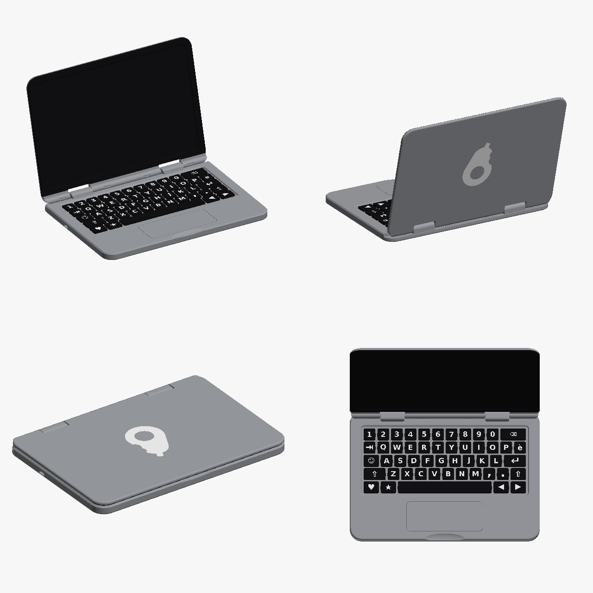
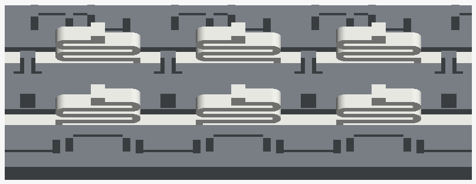

🥑 AvocadoBook – Assembly instructions 🔧
⏱️ About 30 minutes · 🧑🔧 Adult assembly · 🚫🔩 No screws, no glue, no tools

📦 What you need
| Plate | Parts |
|---|
| 1️⃣ fondo | ⬜ bottom (USB‑C port, hinge cradles, ⬛ black text underneath) |
| 2️⃣ piano | ⬜ top case (with the 2 hinge covers) |
| 3️⃣ coperchio | ⬜ lid with ⬛ screen and 🤍 logo + 🟥 small PLA support |
| 4️⃣ tasti | ⬛ 50 keys with 🤍 legends |
| 5️⃣ cornice | ⬛ screen bezel |
| 6️⃣ molle | 🤍 10 keyboard spring strips + 2 trackpad strips, on 🟥 PLA sheets |
| 7️⃣ trackpad | ⬜ trackpad |
🖨️ How to print them: see the print sheet.
✂️ 0. Preparing the parts
- 🍃 Snap off the tear‑off ears at the corners of the top case, lid and bezel by bending them back and forth; file the leftover.
- 🟥 Peel the springs off the PLA sheets by hand (PETG and PLA don't bond). Also remove the small PLA support under the lid hinge.
- ⚠️ Remove the top case with a cold bed by flexing the plate and never pull it by the two hinge covers.
🖥️ 1. Screen and bezel
- Lay the lid with the screen facing up.
- Push the pegs of the ⬛ bezel into the holes of the lid and press all around until it sits flush. 👌
🌀 2. Springs into the bottom
- Each strip is named in the file: fila 1 = number row … fila 5 = space bar row; davanti = front, dietro = back.
- Push each strip upright into its slot, straight rail down. The S shapes of the back strip are mirrored. 🔁
- Do the same with the 2 short trackpad strips.
- ✅ The springs must go all the way down without forcing.

⌨️ 3. Keys and trackpad
- Place every key on its two springs: the 4 tabs slide into the channels of the ribs.
- Place the 🖱️ trackpad on its springs, with its rim in its seat.
💡 Tip: work one row at a time starting from the back and check every key sits straight.
🔗 4. Lid onto the bottom
- Slide the hinge axle horizontally, from the front, into the two cradles at the back of the bottom.
- 📐 Open the lid to at least 105°: at 90° the screen gets in the way of the top case.
🔒 5. Closing with the top case
- Lower the top case from above, letting keys and trackpad pass through their openings; the two hinge covers go over the axle and lock it.
- Press with your palm, at the back first and then towards the front, until all hooks click. 🔊
- ⚠️ Don't force it: if something doesn't go down, lift it and check that no key is crooked.
✅ 6. Final check
- ⌨️ Every key goes down and comes back up by itself.
- 🖱️ The trackpad is flush and clicks.
- 🔌 A USB‑C cable plugs in and stays in.
- 🖥️ The lid closes and stays open at about 105°.
🔒 The keys are designed not to come out: the laptop is not meant to be taken apart often.
🚸 Safety: contains small parts, not suitable for children under 3. Check regularly for broken parts or sharp edges. 🎉 Have fun!